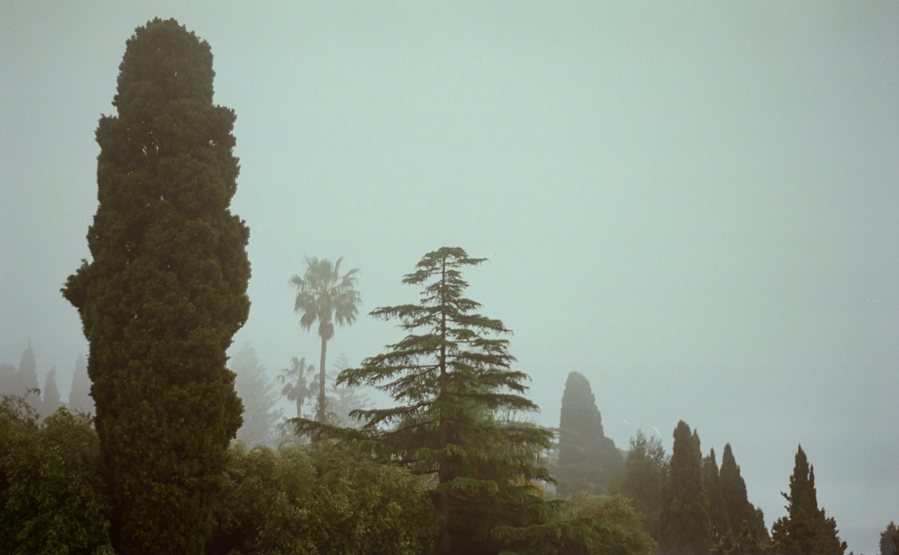
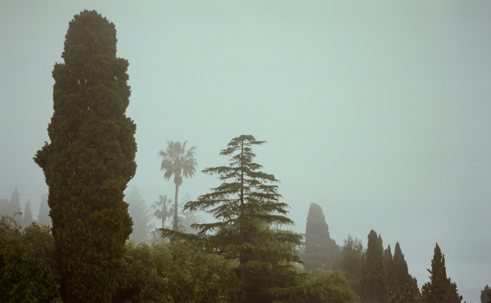

About me
After graduating from Film & Media Studies in 2017 I started working in digital film restoration as a restoration technician. That sparked an interest in image manipulation and playing with pixels. Around the turn of 2021/2022 I slowly transitioned into VFX compositing roles and started using Nuke. In June 2024 I moved to Australia and continued my VFX career there.
With 4 years of experience in compositing I now consider myself a mid-weight Nuke compositor, capable of taking on both studio and freelance work. Please reach out if you feel I could be a good fit for your project.
Selected filmography
Other Roles
Digital Film Restoration
I had the enormous privilege of working on the restoration of many Polish and international classics. Between 2017 and 2022, I took part in restoring nearly a hundred films, including:
- Europe — Themersons’ short experimental film made in 1931, considered lost until 2019.
- Picnic at Hanging Rock — dir. Peter Weir, 1975
- The Hourglass Sanatorium — dir. Wojciech Has, 1973
- Bolek i Lolek — Polish animated TV series, 1963–1986


 
